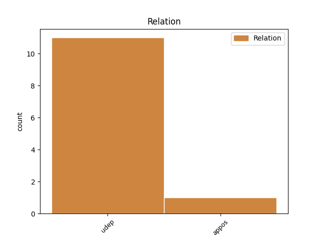
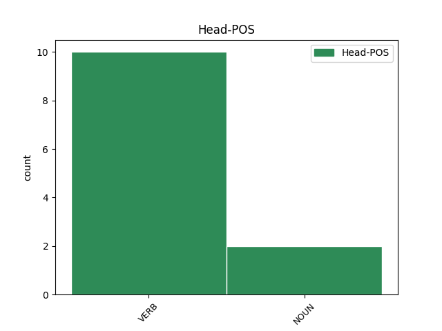
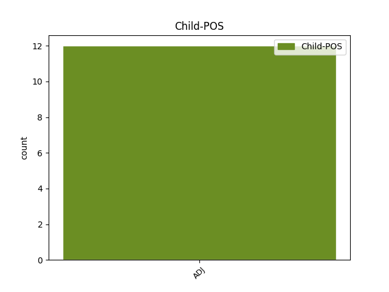

Distribution of features within this leaf



Agreement Rules sorted by frequency.
- When the dependent token is the underspecified dependency(udep) of the head token, and the head token is VERB and the dependent token is ADJ.
1 Усяго _ _ _ _ 0 _ _ _
2 з _ _ _ _ 0 _ _ _
3 16 16 ADJ ORD Case=Gen|Degree=Pos|Gender=Neut|Number=Sing 9 udep _ _
4 сакавіка _ _ _ _ 0 _ _ _
5 УКДБ _ _ _ _ 0 _ _ _
6 па _ _ _ _ 0 _ _ _
7 Гродзенскай _ _ _ _ 0 _ _ _
8 вобласці _ _ _ _ 0 _ _ _
9 выявіла выявіць VERB VBC Aspect=Perf|Gender=Neut|Mood=Ind|Number=Sing|Tense=Past|VerbForm=Fin|Voice=Act 0 _ _ _
10 каля _ _ _ _ 0 _ _ _
11 30 _ _ _ _ 0 _ _ _
12 грамадзян _ _ _ _ 0 _ _ _
13 , _ _ _ _ 0 _ _ _
14 якія _ _ _ _ 0 _ _ _
15 маюць _ _ _ _ 0 _ _ _
16 дачыненне _ _ _ _ 0 _ _ _
17 да _ _ _ _ 0 _ _ _
18 дзейнасці _ _ _ _ 0 _ _ _
19 фінансавай _ _ _ _ 0 _ _ _
20 піраміды _ _ _ _ 0 _ _ _
21 " _ _ _ _ 0 _ _ _
22 МММ _ _ _ _ 0 _ _ _
23 - _ _ _ _ 0 _ _ _
24 2011 _ _ _ _ 0 _ _ _
25 " _ _ _ _ 0 _ _ _
26 . _ _ _ _ 0 _ _ _
1 Чаму _ _ _ _ 0 _ _ _
2 аб'ёмы _ _ _ _ 0 _ _ _
3 падрыхтоўкi _ _ _ _ 0 _ _ _
4 спецыялiстаў _ _ _ _ 0 _ _ _
5 з _ _ _ _ 0 _ _ _
6 медыцынскай _ _ _ _ 0 _ _ _
7 адукацыяй _ _ _ _ 0 _ _ _
8 у _ _ _ _ 0 _ _ _
9 Беларусi _ _ _ _ 0 _ _ _
10 пастаянна _ _ _ _ 0 _ _ _
11 растуць _ _ _ _ 0 _ _ _
12 , _ _ _ _ 0 _ _ _
13 а _ _ _ _ 0 _ _ _
14 залатаць _ _ _ _ 0 _ _ _
15 " _ _ _ _ 0 _ _ _
16 прарэхi _ _ _ _ 0 _ _ _
17 " _ _ _ _ 0 _ _ _
18 ў _ _ _ _ 0 _ _ _
19 кадравым кадравы ADJ JJL Case=Loc|Degree=Pos|Gender=Neut|Number=Sing 20 udep _ _
20 забеспячэннi забеспячэннi NOUN RB Animacy=Inan|Case=Loc|Gender=Neut|Number=Sing 0 _ _ _
21 галiны _ _ _ _ 0 _ _ _
22 нiяк _ _ _ _ 0 _ _ _
23 не _ _ _ _ 0 _ _ _
24 ўдаецца _ _ _ _ 0 _ _ _
25 ? _ _ _ _ 0 _ _ _
Disagree Examples:
1 Жыхар _ _ _ _ 0 _ _ _
2 Рэчыцы _ _ _ _ 0 _ _ _
3 , _ _ _ _ 0 _ _ _
4 які _ _ _ _ 0 _ _ _
5 адпачываў адпачываць VERB VBC Aspect=Imp|Gender=Masc|Mood=Ind|Number=Sing|Tense=Past|VerbForm=Fin|Voice=Act 0 _ _ _
6 18 18 ADJ ORD Case=Gen|Degree=Pos|Gender=Neut|Number=Sing 5 udep _ _
7 сакавіка _ _ _ _ 0 _ _ _
8 з _ _ _ _ 0 _ _ _
9 кампаніяй _ _ _ _ 0 _ _ _
10 на _ _ _ _ 0 _ _ _
11 беразе _ _ _ _ 0 _ _ _
12 Бярэзіны _ _ _ _ 0 _ _ _
13 , _ _ _ _ 0 _ _ _
14 праваліўся _ _ _ _ 0 _ _ _
15 пад _ _ _ _ 0 _ _ _
16 лёд _ _ _ _ 0 _ _ _
17 і _ _ _ _ 0 _ _ _
18 патануў _ _ _ _ 0 _ _ _
19 . _ _ _ _ 0 _ _ _
1 Як _ _ _ _ 0 _ _ _
2 перадаваў _ _ _ _ 0 _ _ _
3 Тэлеграф _ _ _ _ 0 _ _ _
4 , _ _ _ _ 0 _ _ _
5 у _ _ _ _ 0 _ _ _
6 Лепельскім _ _ _ _ 0 _ _ _
7 раёне _ _ _ _ 0 _ _ _
8 ў _ _ _ _ 0 _ _ _
9 рацэ _ _ _ _ 0 _ _ _
10 6 6 ADJ ORD Case=Gen|Degree=Pos|Gender=Neut|Number=Sing 12 udep _ _
11 сакавіка _ _ _ _ 0 _ _ _
12 патанула патануць VERB VBC Aspect=Perf|Gender=Fem|Mood=Ind|Number=Sing|Tense=Past|VerbForm=Fin|Voice=Act 0 _ _ _
13 шасцігадовая _ _ _ _ 0 _ _ _
14 дзяўчынка _ _ _ _ 0 _ _ _
15 , _ _ _ _ 0 _ _ _
16 якая _ _ _ _ 0 _ _ _
17 пайшла _ _ _ _ 0 _ _ _
18 да _ _ _ _ 0 _ _ _
19 вадаёма _ _ _ _ 0 _ _ _
20 гуляць _ _ _ _ 0 _ _ _
21 разам _ _ _ _ 0 _ _ _
22 з _ _ _ _ 0 _ _ _
23 сяброўкай _ _ _ _ 0 _ _ _
24 . _ _ _ _ 0 _ _ _
1 Начальнік _ _ _ _ 0 _ _ _
2 аддзела _ _ _ _ 0 _ _ _
3 метэаралагічных _ _ _ _ 0 _ _ _
4 прагнозаў _ _ _ _ 0 _ _ _
5 Рэспубліканскага _ _ _ _ 0 _ _ _
6 гідраметэацэнтра _ _ _ _ 0 _ _ _
7 Святлана _ _ _ _ 0 _ _ _
8 Рыбакова _ _ _ _ 0 _ _ _
9 20 20 ADJ ORD Case=Gen|Degree=Pos|Gender=Neut|Number=Sing 11 udep _ _
10 сакавіка _ _ _ _ 0 _ _ _
11 распавяла распавяць VERB VBC Aspect=Perf|Gender=Fem|Mood=Ind|Number=Sing|Tense=Past|VerbForm=Fin|Voice=Act 0 _ _ _
12 , _ _ _ _ 0 _ _ _
13 што _ _ _ _ 0 _ _ _
14 тэмпература _ _ _ _ 0 _ _ _
15 ў _ _ _ _ 0 _ _ _
16 красавіку _ _ _ _ 0 _ _ _
17 складзе _ _ _ _ 0 _ _ _
18 ў _ _ _ _ 0 _ _ _
19 сярэднім _ _ _ _ 0 _ _ _
20 5,8 _ _ _ _ 0 _ _ _
21 °С _ _ _ _ 0 _ _ _
22 , _ _ _ _ 0 _ _ _
23 а _ _ _ _ 0 _ _ _
24 колькасць _ _ _ _ 0 _ _ _
25 ападкаў _ _ _ _ 0 _ _ _
26 будзе _ _ _ _ 0 _ _ _
27 ў _ _ _ _ 0 _ _ _
28 межах _ _ _ _ 0 _ _ _
29 сярэдніх _ _ _ _ 0 _ _ _
30 шматгадовых _ _ _ _ 0 _ _ _
31 значэнняў _ _ _ _ 0 _ _ _
32 -- _ _ _ _ 0 _ _ _
33 каля _ _ _ _ 0 _ _ _
34 44 _ _ _ _ 0 _ _ _
35 міліметраў _ _ _ _ 0 _ _ _
36 . _ _ _ _ 0 _ _ _
1 У _ _ _ _ 0 _ _ _
2 Верхнядзвінскім _ _ _ _ 0 _ _ _
3 раёне _ _ _ _ 0 _ _ _
4 Віцебскай _ _ _ _ 0 _ _ _
5 вобласці _ _ _ _ 0 _ _ _
6 ў _ _ _ _ 0 _ _ _
7 вёсцы _ _ _ _ 0 _ _ _
8 Бароўка _ _ _ _ 0 _ _ _
9 19 19 ADJ ORD Case=Gen|Degree=Pos|Gender=Neut|Number=Sing 15 udep _ _
10 сакавіка _ _ _ _ 0 _ _ _
11 каля _ _ _ _ 0 _ _ _
12 20:55 _ _ _ _ 0 _ _ _
13 моцны _ _ _ _ 0 _ _ _
14 вецер _ _ _ _ 0 _ _ _
15 абрынуў абрынуць VERB VBC Aspect=Perf|Gender=Masc|Mood=Ind|Number=Sing|Tense=Past|VerbForm=Fin|Voice=Act 0 _ _ _
16 частка _ _ _ _ 0 _ _ _
17 жылога _ _ _ _ 0 _ _ _
18 дома _ _ _ _ 0 _ _ _
19 . _ _ _ _ 0 _ _ _
1 Пра _ _ _ _ 0 _ _ _
2 гэта _ _ _ _ 0 _ _ _
3 21 21 ADJ ORD Case=Gen|Degree=Pos|Gender=Neut|Number=Sing 5 udep _ _
4 сакавіка _ _ _ _ 0 _ _ _
5 заявіў заявіць VERB VBC Aspect=Perf|Gender=Masc|Mood=Ind|Number=Sing|Tense=Past|VerbForm=Fin|Voice=Act 0 _ _ _
6 першы _ _ _ _ 0 _ _ _
7 віцэ-прэм'ер _ _ _ _ 0 _ _ _
8 Беларусі _ _ _ _ 0 _ _ _
9 Уладзімір _ _ _ _ 0 _ _ _
10 Сямашка _ _ _ _ 0 _ _ _
11 . _ _ _ _ 0 _ _ _